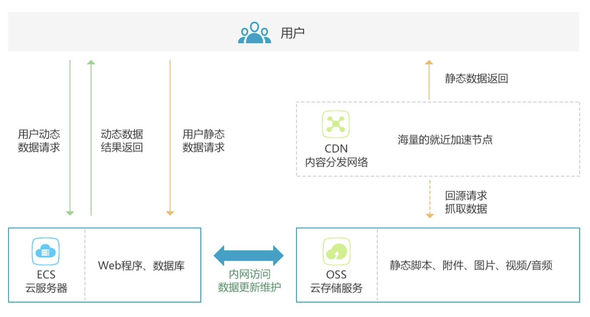
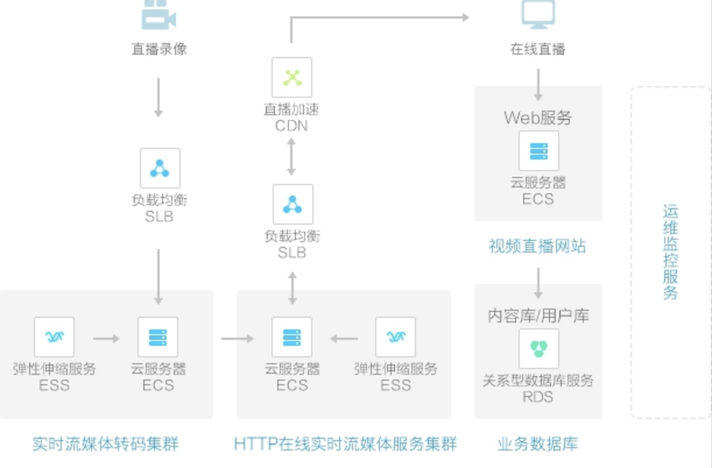
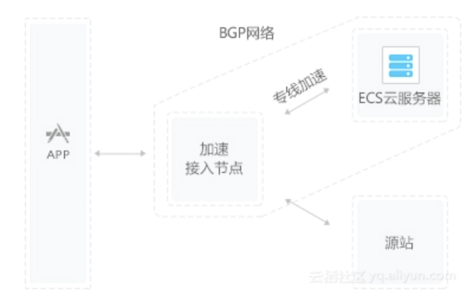

1、web站点加速
站点或者应用中大量静态资源的加速分发，建议将站点内容进行动静分离，动态文件可以结合云服务器ECS，静态资源如各类型图片、html、css、js文件等，建议结合 对象存储OSS 存储海量静态资源，可以有效加速内容加载速度，轻松搞定网站图片、短视频等内容分发
- 架构示意图

2、视音频点播/大文件下载分发加速
支持各类文件的下载、分发，支持在线点播加速业务，如mp4、flv视频文件或者平均单个文件大小在20M以上，主要的业务场景是视音频点播、大文件下载（如安装包下载）等，建议搭配对象存储OSS使用，可提升回源速度，节约近2/3回源带宽成本。
- 架构示意图
 )
)
3、视频直播加速（内测中）
视频流媒体直播服务，支持媒资存储、切片转码、访问鉴权、内容分发加速一体化解决方案。结合弹性伸缩服务，及时调整服务器带宽，应对突发访问流量；结合媒体转码服务，享受高速稳定的并行转码，且任务规模无缝扩展。目前CDN直播加速已服务内部用户测试并优化，即将上线，敬请期待
- 架构示意图

4、移动应用加速
移动APP更新文件（apk文件/ipa文件）分发，移动APP内图片、页面、短视频、UGC等内容的优化加速分发。提供httpDNS服务，避免DNS劫持并获得实时精确的DNS解析结果，有效缩短用户访问时间，提升用户体验。
- 架构示意图
